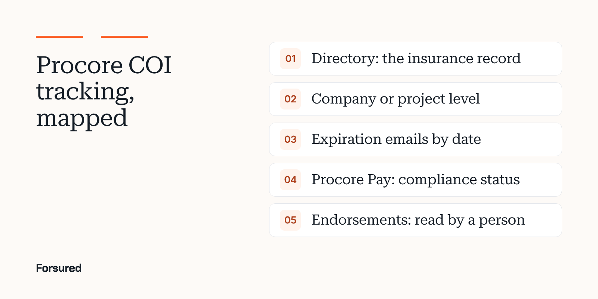

Blog / Tech stack
Tech stackProcore COI tracking: where contractor insurance lives in Procore and what it checks
Procore COI tracking works through insurance records in the Directory, at company or project level, with policy numbers, limits, dates and the certificate attached. Procore Pay can turn those records into a compliance status that helps decide if an invoice is ready to pay. What Procore's docs don't describe is reading the endorsements.

This is the first post in our "What's in your stack" series, where we take one tool general contractors run every day and show where contractor insurance and COI data sits in it. We start with Procore COI tracking, because so many project teams already keep their vendors, commitments and invoices in Procore, and every contractor COI they collect has to land somewhere.
Every Procore detail below comes from Procore's own pages and support docs, checked on Nov 18, 2026. Procore changes its product often, and its support site notes that some pages are moving to a new version, so check the linked page before you change a setup.
Can Procore track certificates of insurance?
Yes, Procore COI tracking is built into the Directory. Each vendor's company record can carry insurance entries, and Procore's guide to adding insurance in the Company Directory lists the fields: type, insurance provider, policy number, exempt, limit amount, information received, effective date, expiration date, send expiration notification, status, notes, additional insured and attachments. The certificate itself goes in as an attachment.
So Procore insurance tracking is a structured record of what a certificate says, plus the file. A user with the Insurance Manager role types it in. Procore's docs say to enter the provider and policy number "exactly as it appears on the insurance certificate." Changes show up in the record's Change History tab, which helps when someone asks who updated a policy and when.
Where does contractor insurance data live in Procore?
Contractor insurance data in Procore lives in three places, and it helps to know which one your team actually uses.
| Where | Level | What it holds | Who keeps it current |
|---|---|---|---|
| Company Directory, insurance on the company record | All projects | Policy type, provider, number, limit, dates, status, notes, additional insured (free text), attachments | Insurance managers |
| Project Directory, project insurance | One project | The same fields, for a policy or certificate that applies to that project only | Insurance managers |
| Commitment, Compliance tab (Procore Pay) | One commitment | Insurance compliance status: Compliant, Not Compliant, or Not Required (manual) | Invoice administrators who are insurance managers or Directory admins |
The company and project split matters more than it looks. Procore says to add insurance at company level "only when you want to add insurance to the company record for all projects." Project-level insurance in the Project Directory is for a single job. If one owner wants $10 million in umbrella limits and another wants $5 million, the project-level record is where that difference can show up. Our state COI requirements pages show how much the rules vary before an owner adds anything.
If you run Sage 300 CRE alongside Procore, the Procore insurance page for company records says the insurance type, effective and expiration dates, limit, name and policy number sync between the two.
How does Procore Pay use insurance compliance?
Procore Pay turns the Directory's insurance records into a status on each commitment. Procore's page on the Compliance tab on a commitment says Procore Pay "can be configured to track compliance as a payment requirement to help your team determine if an invoice is ready to pay." The tab has an Insurance card and a Contract Compliance Documents card.
There are two ways to set the insurance compliance status, per Procore's guide to insurance compliance statuses:
- Manual. Someone edits the commitment and picks Compliant, Not Compliant or Not Required.
- From the Directory. Procore manages the status for you. A commitment reads Compliant only when every listed insurance entry is Compliant, and anything else, including "Compliant - In Progress," reads Not Compliant.
Procore Pay marks a policy "Expiring Soon" starting 14 days before it expires and "Expired" from the day after. It's listed as generally available in select US markets and designed for general contractors and owner-builders. You'll need Procore Pay turned on for the company and the project, plus the Insurance Compliant payment requirement in the company-level Payments tool. Ask your Procore rep whether Procore Pay is part of your contract.
What doesn't Procore insurance tracking check?
Procore insurance tracking stores what a certificate says. Procore's own docs don't describe reading the endorsements behind it. The Additional Insured field on the project-level page is described as "a free-text entry about any additional insured entities for the Certificate of Insurance (COI)." None of the Procore pages we read mention waiver of subrogation, primary and noncontributory wording, or completed operations, and none describe pulling data from a certificate automatically.
That's the gap that matters on a contractor COI, and it's where Procore COI tracking needs a second step. A certificate can show the additional insured box checked while the endorsement that actually extends coverage to you is missing, or covers ongoing operations and not completed operations. Our guide to endorsement review explains why the form, not the checkbox, decides coverage, and how to check a contractor COI walks through each line.
Expiration emails are the other thing to understand. Procore sends them to insurance managers and the vendor's primary and invoice contacts based on the expiration date. Its docs say changing a status later "will NOT trigger any automated email notifications." So a policy that's still in date but missing a required endorsement won't prompt anyone on its own.
How do you set up Procore COI tracking?
Set up Procore COI tracking in this order so the records and the payment rule agree:
- Decide which insurance you'll keep at company level (the same on every job) and which at project level (set by an owner or contract).
- Give the right people the Insurance Manager role, so they can add records and receive expiration emails.
- For each vendor, add the policy type, provider, policy number, limit and dates exactly as the certificate shows them, check "send expiration notification," and attach the certificate and endorsements.
- If you use Procore Pay, turn on the Insurance Compliant payment requirement and choose the manual or Directory method for each commitment.
- Have someone read each contractor COI and its endorsements against the project's requirements before marking a record Compliant, since that step sits outside what Procore's docs describe.
For prequalification, Procore offers a separate Prequalification product for sending qualification forms and approving or denying submissions. Its page doesn't say what insurance details it collects, so ask how it connects to the Directory records.
Where does contractor insurance and COI data sit in Procore?
Contractor insurance and COI data in Procore sits in the Directory, on each vendor's company record or project record, and flows from there to the Compliance tab on commitments when Procore Pay is on. The certificate is an attachment. The limits and dates are typed fields. The endorsements are attachments and a free-text note, not checked items.
That makes Procore insurance records a good system of record for insurance compliance and a good place to hold a payment until the record is Compliant. It's not, by itself, a reviewer of what the endorsements say. Teams fill that gap with a person on the risk or project team, or with a tool from the Procore App Marketplace. If you're weighing tools, ask each one which Procore records it reads and writes, use our COI tracking software checklist to test them, and see how tools compare in our guide to the best COI tracking software for construction. Whichever you pick, Procore COI tracking works best when one place decides what's compliant and Procore holds the result. Procore's pricing page doesn't publish a price, so ask your rep which of these features your contract covers.
Forsured checks every contractor COI and endorsement against your project requirements, flags coverage gaps, brings the broker into the fix and keeps watching after approval, with a Procore integration available for early access customers.
Get the Forsured weekly newsletter.
One email every Monday: short summaries of the week's posts on contractor COIs and project requirements, plus the coverage gaps we're seeing on real projects.
You're on the list. Look for the newsletter on Monday.
One email a week. No spam. Unsubscribe anytime.
About Forsured
Forsured is construction insurance compliance software for general contractors and the brokers who insure their trade contractors. You set each project's insurance requirements once. Forsured reads every contractor COI and endorsement against them, flags each gap with the reason, and keeps checking through renewals until the job is done.
- Project requirements with exceptions, not one template for every job
- Endorsement review (additional insured, waiver of subrogation, primary and noncontributory), not just the certificate
- A shared workspace where the contractor's broker sees exactly what's missing
- A person on your team approves every result, with a full review history
“What stood out to us is that Forsured doesn't just organize the paperwork. It helps us understand what meets the project requirements, what needs attention, and what needs to happen next. That clarity across the GC, subcontractor, and broker is where we see the real value.”
Send us one project's requirements and a contractor COI or two. We'll show you every gap we find, free.
Common questions
Can Procore track certificates of insurance?
Yes. Procore stores insurance records for each vendor in the Company or Project Directory, with the policy type, provider, policy number, limit, effective and expiration dates, a status and the certificate attached. It can email insurance managers and the vendor's contacts before a policy expires. The record is typed in from the certificate, per Procore's support docs.
What's the difference between company and project insurance in Procore?
Company-level insurance in the Company Directory applies to a vendor on all your projects. Project-level insurance in the Project Directory applies to one project, which fits when an owner or contract sets its own limits or forms. Procore's support docs cover the two as separate steps, so decide up front which records your team keeps at each level.
Does Procore Pay hold payments for an expired COI?
Procore says Procore Pay can be configured to track insurance compliance as a payment requirement, to help your team determine if an invoice is ready to pay. With the Directory method, a commitment reads Compliant only when every listed insurance entry is Compliant. Procore Pay is generally available in select US markets and needs the Insurance Compliant requirement turned on.
Does Procore check endorsements on a contractor COI?
Procore's support docs don't describe reading or verifying endorsements. The insurance record has an Additional Insured field that Procore describes as free text, and its docs don't mention waiver of subrogation or completed operations. Someone on your team, or a tool connected to Procore, still has to read the endorsement forms against the project's requirements.
How much does Procore cost?
Procore doesn't publish a price. Its pricing page offers a custom quote and says every annual contract includes unlimited users, unlimited data and support. Procore's own blog on deal structures mentions annual construction volume and multi-year options. Ask your Procore rep whether Procore Pay and the Directory insurance features are part of your contract.
Can other COI tools connect to Procore?
Yes. The Procore App Marketplace lists third-party apps, and several insurance compliance tools connect to Procore. Ask each one which Procore records it reads and writes, such as Directory insurance records or Procore Pay compliance statuses, how often it syncs, and which plan includes the integration.
Sources
- Plans and Pricing, Procore, checked Nov 18, 2026
- Add Insurance to a Company Record in the Company Directory, Procore Support, checked Nov 18, 2026
- Add Project Insurance to a Company Record in the Project Directory, Procore Support, checked Nov 18, 2026
- About the Compliance Tab on a Commitment with Procore Pay, Procore Support, checked Nov 18, 2026
- Manage Insurance Documents & Compliance Statuses for a Commitment, Procore Support, checked Nov 18, 2026
- Making Procore Pricing More Flexible and Predictable, Procore, Oct 22, 2024; checked Nov 18, 2026
- Construction Prequalification Software, Procore, checked Nov 18, 2026
- App Marketplace, Procore, checked Nov 18, 2026
We link to the original reporting and research behind every post. This post is general information, not legal or insurance advice: Forsured is a software company, not a law firm or a licensed insurance agency, so confirm anything you'll rely on with your broker or attorney. Spotted something we got wrong? Write to hello@forsured.ai and we'll fix it.
About this article
Written by the Forsured team.
Published . Every source is linked above.